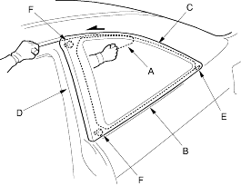
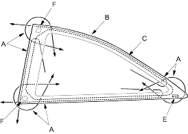

- Put on gloves to protect your hands.
- Use seat covers to avoid damaging any surface.
- Remove these items:
- Apply protective tape along the inside and outside edges of the body and along the edge of the headliner. Using an awl, make a hole through the adhesive from inside the vehicle. Push a piece of piece of piano wire through the hole and wrap each end around a piece of wood.
- With a helper on the outside, pull the piano wire (A) back and forth in a sawing motion. Hold the piano wire as close to the quarter glass (B) as possible to prevent damage to the body and carefully cut through the adhesive (C) around the entire quarter glass:
- If the quarter glass is to be reinstalled, take care not to damage the moulding (D).
- If the moulding is damaged, replace the quarter glass, moulding fastener (E) and clips (F) as an assembly.
- If any of the clips and fastener are broken, the quarter glass can be reinstalled using butyl tape (refer to step 8).


- Carefully remove the quarter glass.
- With a putty knife, scrape the old adhesive smooth to a thickness of about 2 mm (0.08 in.) on the bonding surface around the entire quarter glass opening flange:
- Do not scrape down to the painted surface of the body, damaged paint will interfere with proper bonding.
- Remove the clips and fastener from the body.
- Clean the body bonding surface with a sponge damaged in alcohol. After cleaning, keep oil, grease and water from getting on the surface.
- If the old quarter glass is to be reinstalled, use a putty knife to scrape off all of the old adhesive, any broken clips and the fastener from the glass. Clean the inside face and the edge of the glass with alcohol where new adhesive is to be applied. Make sure the bonding surface is kept free of water, oil and grease.